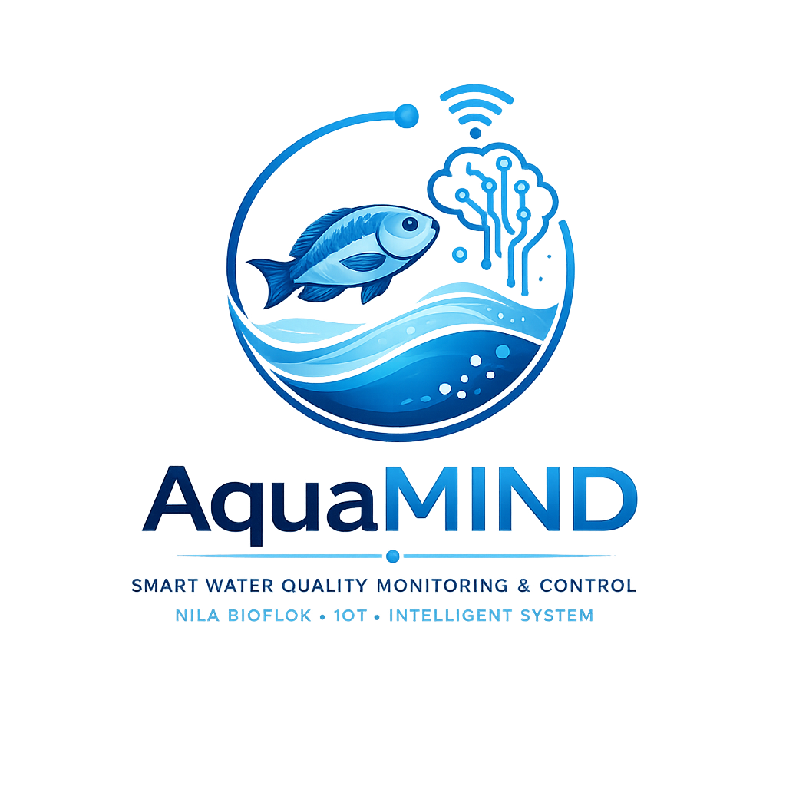
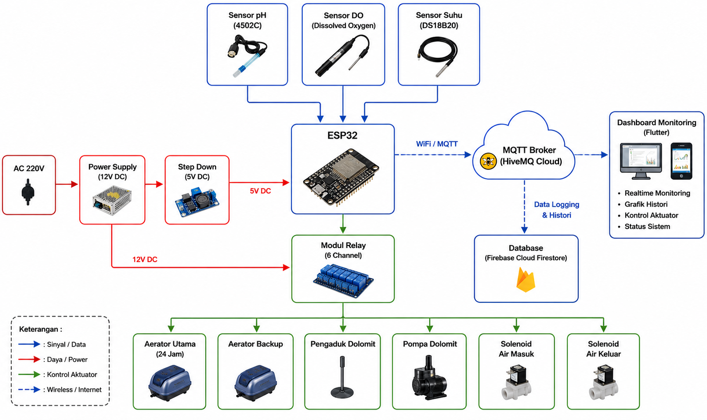
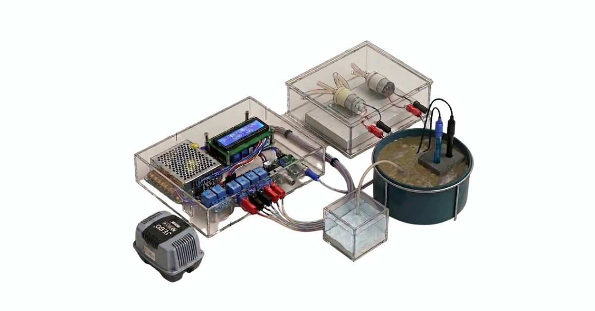
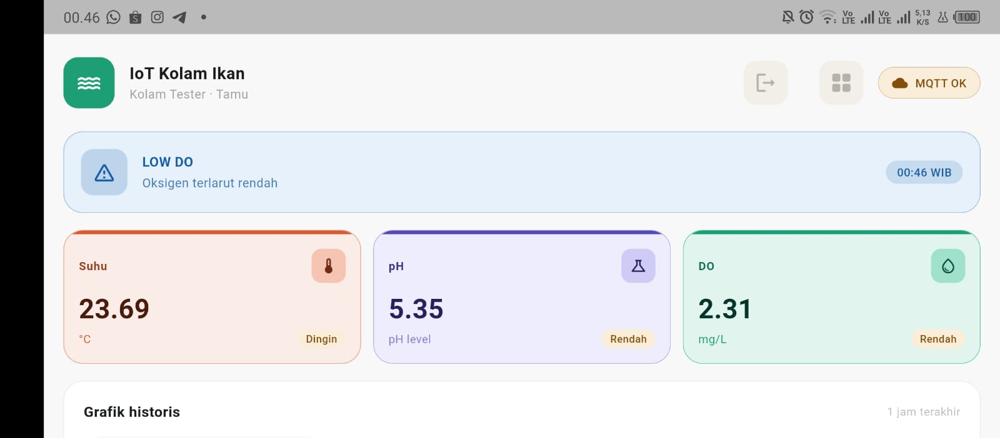
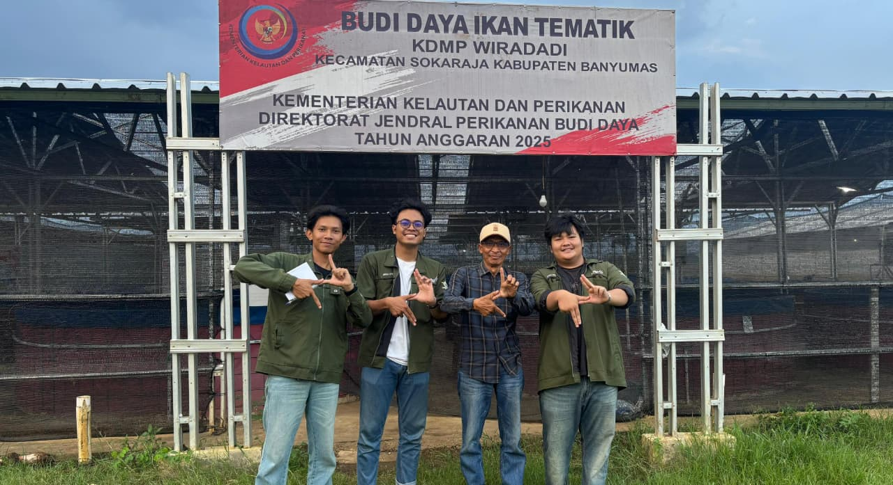
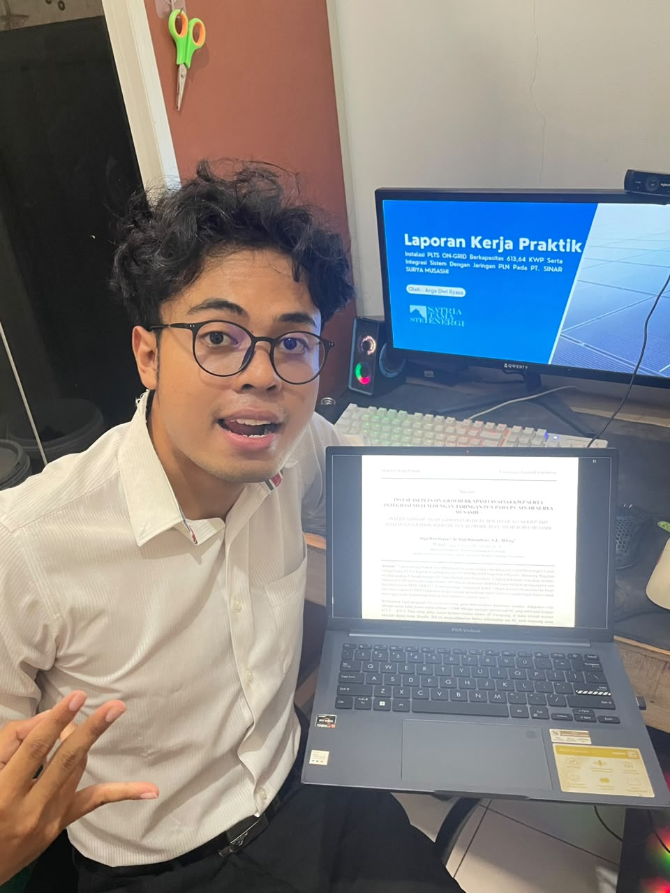
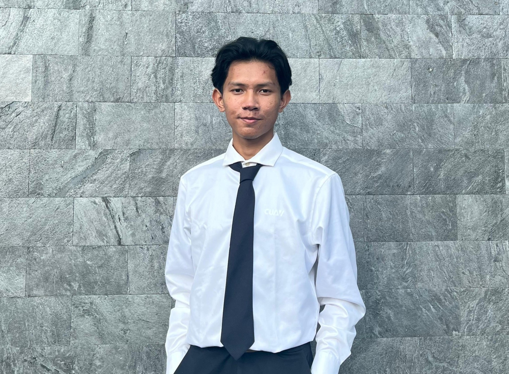
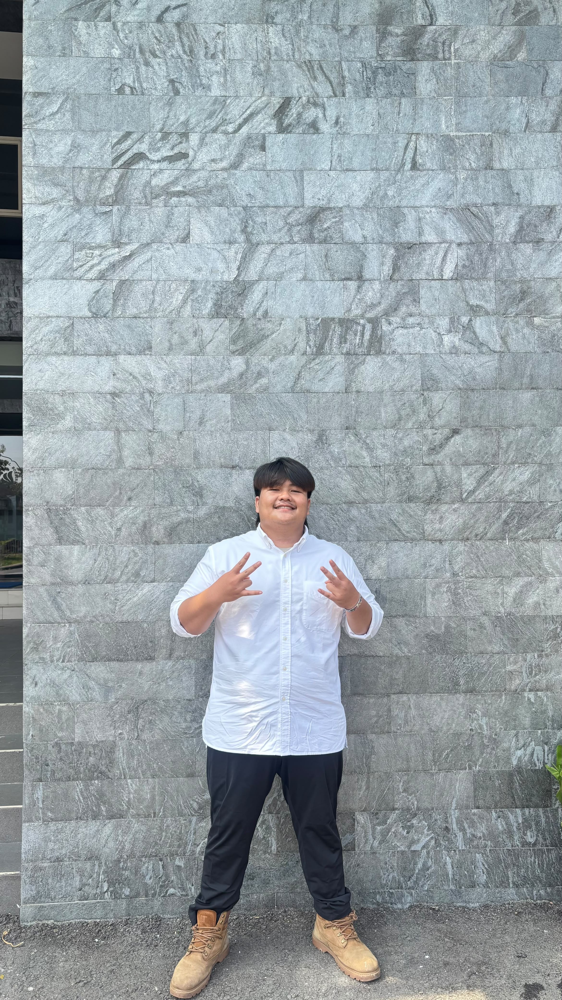

AquaMINDSistem cerdas yang mengintegrasikan monitoring pasif dan kontrol aktif. Dirancang khusus untuk menjaga parameter kritis kolam ikan nila melalui telemetri real-time dan otomasi mikrokontroler tingkat lanjut.
Lihat Cara KerjaSistem otomatis yang menjaga kolam Anda tetap sehat 24/7 tanpa perlu campur tangan manual.
Sensor secara terus-menerus membaca kondisi air kolam Anda—mulai dari tingkat oksigen terlarut (DO), suhu, hingga tingkat keasaman (pH).
Jika suhu tidak normal, sistem memperingatkan Anda. Jika oksigen menipis, sistem merespon otomatis menyalakan aerator ekstra.
Jika air mendadak terlalu asam (pH drop), pompa akan otomatis menyuntikkan cairan kapur penetral, mengaduknya, dan menstabilkan air.
Segala perubahan kondisi air dan tindakan penyelamatan yang dilakukan alat akan langsung dilaporkan ke layar aplikasi ponsel Anda.
Kombinasi sensor pembaca, relay penggerak, dan infrastruktur komputasi awan.
Parameter pembacaan kritis. Sistem mendeteksi fluktuasi asiditas, termal, dan oksigen untuk mencegah masalah sejak dini.
Sistem kendali aktif. Relay memicu kincir aerator, pompa kapur, dan agitator secara otomatis saat kondisi kritis tercapai.
Infrastruktur backend industri. HiveMQ menjamin transmisi cepat, sementara Firebase menyimpan riwayat data tanpa batas.
Aplikasi dashboard cross-platform. Menghadirkan grafik interaktif dan notifikasi peringatan langsung ke tangan pengguna.
Rancangan rangkaian mikrokontroler, modul sensor, dan jalur aktuator (relay).

Klik gambar untuk memperbesar.
Diagram Rangkaian Elektronika: Menampilkan integrasi Mikrokontroler dengan modul sensor dan rangkaian Relay multi-channel untuk mengaktifkan Aerator, Agitator, dan Pompa Injeksi.
Klik pada gambar untuk melihat detail resolusi tinggi.



Inovator di balik perancangan perangkat keras dan antarmuka aplikasi AquaMIND.

Hardware Engineer

Software App Developer

IoT & Database Specialist
Masukan Anda sangat berharga bagi pengembangan teknologi AquaMIND ke depannya. Kami mengundang Bapak/Ibu Dosen Penguji serta rekan-rekan pengunjung Expo untuk memberikan penilaian.